Yeastar S-series VoIP PBX and Bitrix24 Integration Guide (Using Callbee)
Info
- To enable integration, you need to follow the steps in this guide one by one in the order in which they are described.*
Software Requirements
- S-series VoIP PBX (S20, S50, S100, S300).
- Static IP address (should be purchased from your Internet service provider).
- Any edition of cloud or self-hosted version of Bitrix24.
- A valid SSL certificate for the self-hosted version of Bitrix24.
Important Warnings
- The integrated service supports up to 4-digit extensions.
- The integrated service does not convert phone numbers. They must be entered in international format both in Bitrix24 and the PBX.
How the Integration Works
The integrated service enables the connection via AMI between your Yeastar S-series VoIP PBX and Bitrix24 REST API and also converts, server-side, the call records audio files from wav (the only call recording format supported by Yeastar IP-PBX is wav) to mp3.
It is important to know that the VoIP SIP traffic is contained within your PBX.
The integrated service connects with Bitrix24 via REST API: it sends requests to call up a call card, verify a phone number, and forward the recorded call from the PBX.
1. Yeastar VoIP PBX Configuration
1.1 Network Services Configuration
Open the admin panel of the PBX and go to Settings - System – Security, then go to the Network Services tab and configure the following parameters:
for Yeastar S20
- Check the box next to Enable FTP
- Check the box next to Enable TFTP
for Yeastar S50/S100/S300
- Change the protocol from HTTPS to HTTP
The protocol switch should be performed if a valid SSL certificate is not installed
- Check the box next to Enable AMI
- Change the default Username and Password (you will need to enter this username and password in your Callbee account)
- In the Allowed IP Addresses/Subnet Masks field that appears, enter the IP addresses: 89.108.65.246, 31.24.92.54, 46.101.225.17 and the subnet mask 255.255.255.255
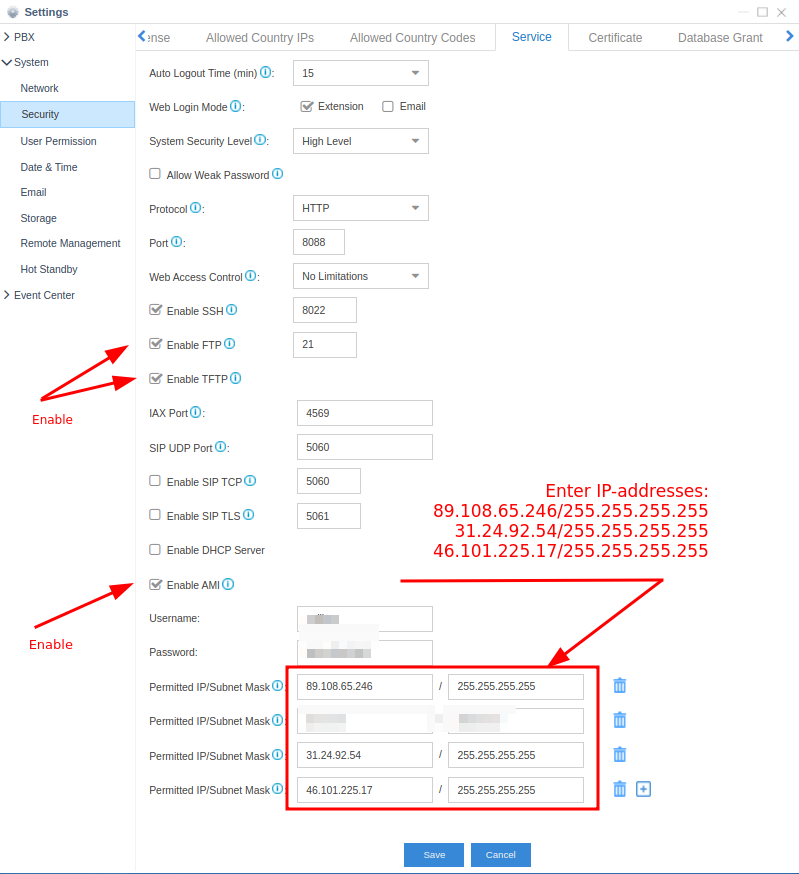
1.2 Data Storage Configuration
for Yeastar S20
Go to Settings - System – Data Storage and to the File Share tab:
- Check the box next to Enable FTP Access
- Check the box next to Enable Data Storage
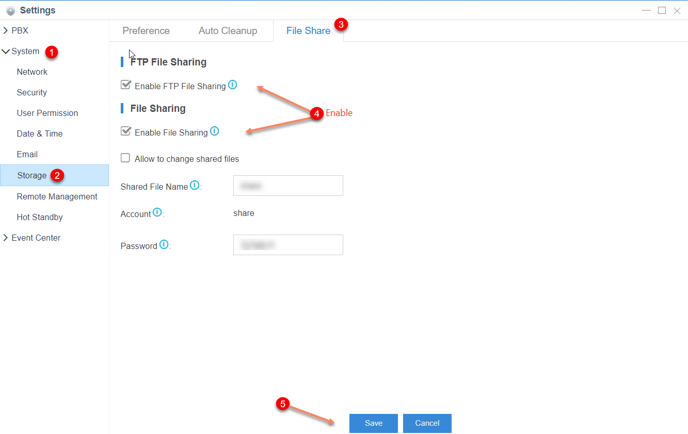
1.3 API Configuration
for Yeastar S50/S100/S300
Go to PBX Settings – PBX Settings - API:
- Check the box next to Enable API
- Check the box next to PBX Monitor for all phone numbers and lines
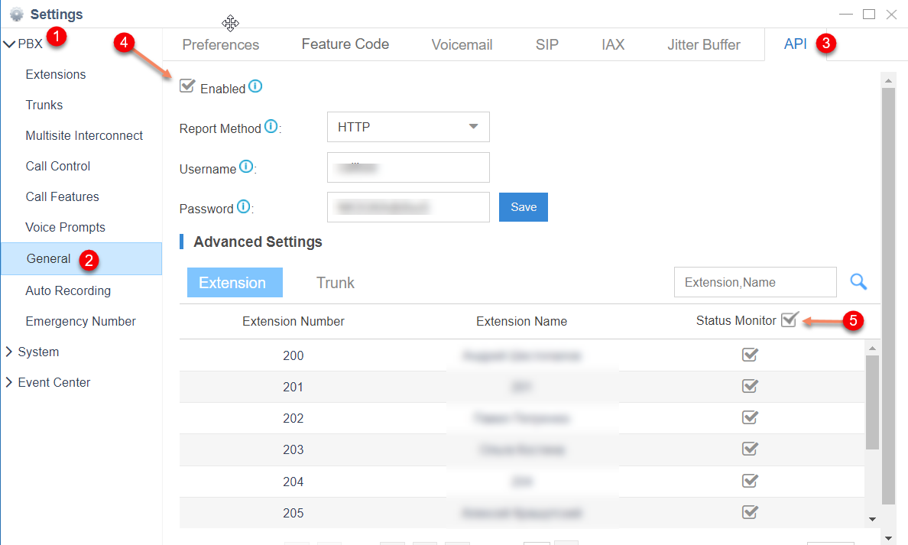
2. Network Settings
In order for the integrated service to connect to your PBX, you should have a static IP address, and the following two ports should be forwarded to the PBX using NAT:
- TCP 5038 – to access the Yeastar AMI
- TCP 21 – to access the Yeastar FTP (for Yeastar S20)
- HTTP/HTTPS 8088 (default WEB UI port) – to access the Yeastar API
Info
The UI for port forwarding configuration can differ greatly depending on the router used in your network. You can find up-to-date instructions on port forwarding for your router on the official website of the router manufacturer.
3. Initial Bitrix24 Configuration
3.1 Application Installation
Log in to your Bitrix24 corporate portal as an administrator.
- In the Bitrix24 menu, go to Applications, select the IP Telephony category and find the Callbee application
- Go to the Callbee application page и and click the Install button
- Next, you need to read and agree to the terms of the license agreement and the privacy policy by checking the corresponding boxes and then click the INSTALL button
Сallbee in Bitrix24 application directory
3.2 User Extensions Configuration
- Go to Employees
- Open an Employee profile
- Enter the employee’s extension phone number

4. Integration Configuration via a Callbee account
After performing all the configuration as described above, you need to enable the service integration.
4.1 Enabling the Integration on Callbee Side Manually
-
Click the BITRIX24 WITH YEASTAR «Install» button
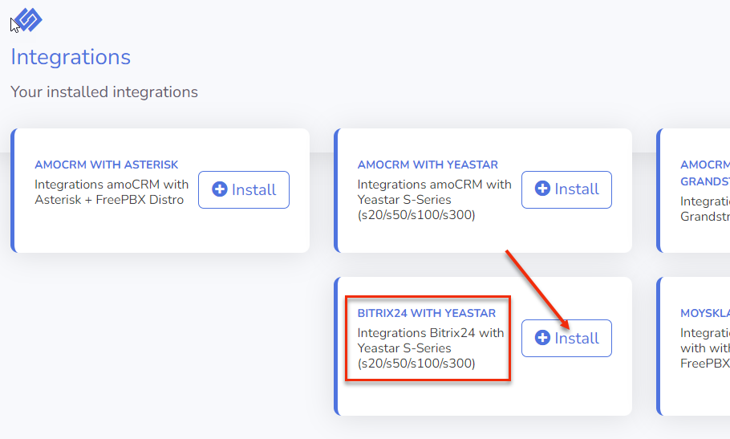
-
Fill in all the fields required for integration
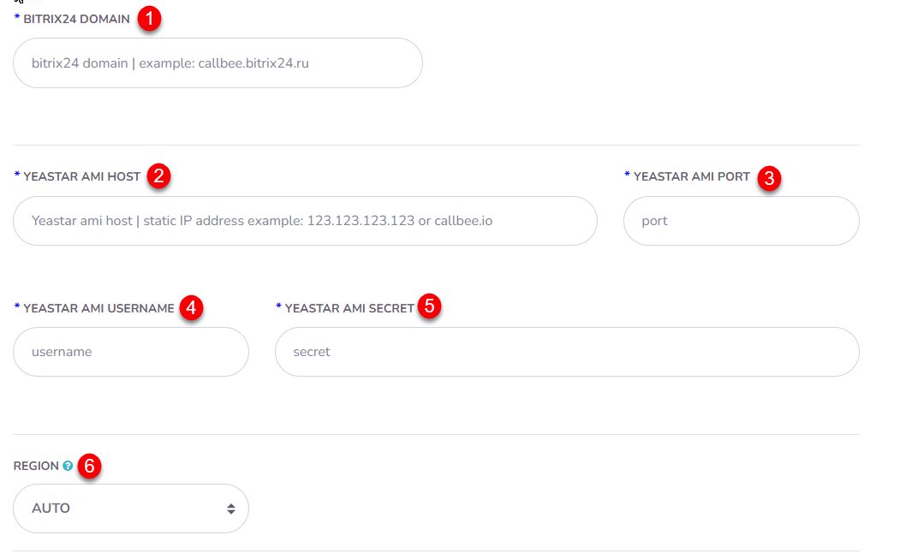
-
Bitrix24 Domain (1) - Enter the domain name of your Bitrix24 (without https://)
- Yeastar AMI host (2) - Enter the static IP address used to connect to the Yeastar AMI
- Yeastar AMI port (3) - Enter your port used to connect to the Yeastar AMI (5038 is a standard AMI port)
- AMI username (4) - Enter the username used to log in to the Yeastar AMI
- AMI secret (5) - Enter the password used to log in to the Yeastar AMI
-
Region (6) - Selecting the nearest region to connect to Yeastar
Info
This feature enables the fastest connection between Yeastar and CallBee
You can select one of the three available regions: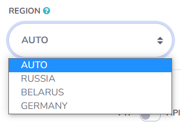
- Russia - connecting to an integration node located in the Russian Federation
- Belarus - connecting to an integration node located in the Republic of Belarus
- Germany - connecting to an integration node located in Germany
- AUTO - automatically connecting to any node
4.2 Enabling the Integration on Callbee Side Using an Installer
- Click Install Integration
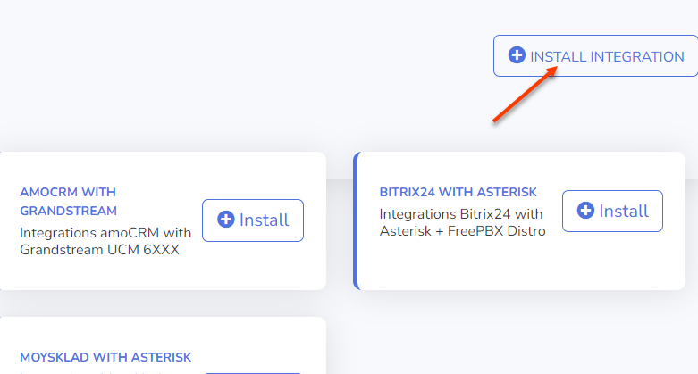
- Select Bitrix24 in the CRM field
- Select Yeastar in the Platform field

- Fill in all the required fields

- Yeastar AMI host (2) - Enter your static IP address used to connect to the Yeastar AMI
- Yeastar AMI port (3) - Enter your port used to connect to the__Yeastar AMI__ (5038 is a standard AMI port)
- AMI username (4) - Enter the username used to log in to the Yeastar AMI
- AMI secret (5) - Enter the password used to log in to the Yeastar AMI
4.3 Call Recording Configuration
- Set the FTP/API (7) toggle in the desired position depending on the model of the Yeastar PBX
- FTP (for Yeastar S20) / API (for Yeastar S50/S100/S300) (7) - the toggle position depends on the PBX model
-
Convert to mp3 (8) - Convert the call record audio file to mp3
for Yeastar S20

- FTP host (9) - your static IP address used to connect to the Yeastar FTP
- FTP port (10) - your port used to connect to the Yeastar FTP (21 is a standard FTP port)
- FTP username (11) - the username used to log in to the Yeastar FTP is the same as SSH (defaul support)
- FTP secret (12) - the password used to log in to the Yeastar FTP is the same as SSH (activate/diactivate SSH show password)
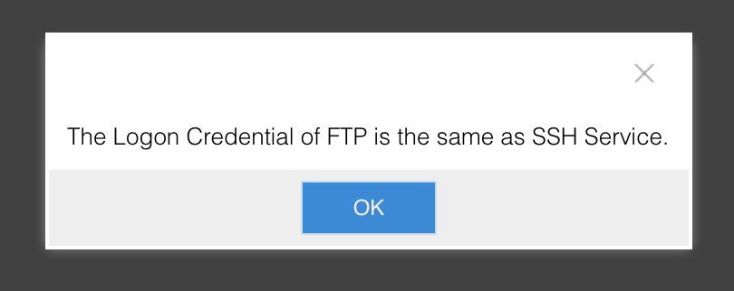
- Path records directory (13) - if this field is left blank, the default directory for saving the call record files at /ftp_media mmc/autorecords/ will be used
for Yeastar S50/S100/S300

- API host (9) - your static IP address used to connect to the Yeastar API
- API port (10) - your port used to connect to the Yeastar API
- API username (11) - the username used to log in to the Yeastar API
- API secret (12) - the password used to log in to the Yeastar API
Important warning
- When transferring an unprompted (blind) call, only the second part of the conversation (with the second speaker) will be recorded, consequently, the first part of the conversation (with the first speaker) will not be saved, even if the recording of the entire line is enabled.
- When transferring a prompted call, the entire conversation will be duly recorded (line recording needs to be enabled) and forwarded to the last speaker in the CRM system (starting from the integration version v2.0).
This warning is pertinent to the operational features of Yeastar PBXs
4.4 Configuring the Integration on Callbee Side for Each Separate PBX Line (Available in Pro Version and Demo Mode)
- Fill in the required fields

- Ignore Lines (DID) Numbers (14) - Enter the DID number(s) separated by a comma and a single space which the integration module should ignore. This feature allows you not to respond to phone numbers not associated with working in the CRM system. For example, direct dial numbers of the accounting or administrative department.
- Line (DID) (15) - Department/division phone number. A phone number for incoming calls that need to be referred to a division/department (the phone number is taken from the DID Number field in the FreePBX settings)
- Description (16) - Line (Did)description. It will be used to fill in the Line field in a Contact card or a Deal card in Bitrix24. If the Description field is left blank, the line number (DID) will be forwarded
-
Manager ID For Missed Calls (17) - Bitrix24 user ID for missed calls (a user responsible for missed calls from new customers not registered in Bitrix24). You can set a different value for each line. This field should not be left blank!
Info
You can find the Manager ID by opening the employee's Bitrix24 profile in the address bar of your browser
 In the screenshot above, the__Manager ID__ value is set to 1
In the screenshot above, the__Manager ID__ value is set to 1 -
Smart Call (18) - Enabling smart routing (transferring a call to a designated employee) with working hours indicated. Outside of the smart routing schedule, the call will be forwarded according to the default route. This feature is most often used to play a message to a customer that he got through after hours.
- Manager time in bitrix24 (19) - Enabling work schedule for smart routing from Bitrix24
- Auto Lead (Deal) (20) - Enabling automatic creation of leads or deals (+ contacts) in Bitrix24 (depending on the Bitrix24 mode of operation)
- Add to chat bitrix24 (21) - Enabling the displaying of information about all calls in the Bitrix24 chat
- Add DID Lines (22) - Adding a line for customization
- SAVE (23) - Saving the integration settings
4.5 Configuring the Integration on Callbee Side for Each Extension.
Important warning
To configure the extensions using the Callbee service, you need to enable the Use B24 users table toggle
- Go to Integration Settings, click __Settings
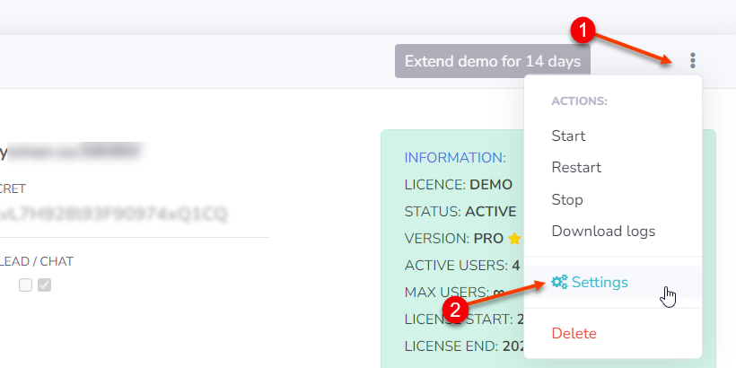
- Enable the __Use B24 users table toggle
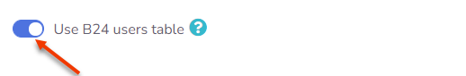
- After enabling the Use B24 users table toggle, the Bitrix24 users menu item will appear, go to it
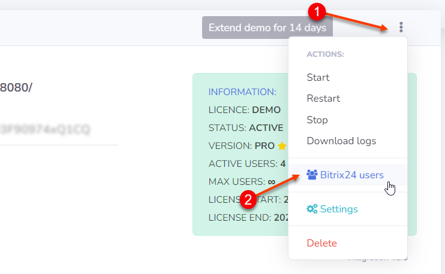

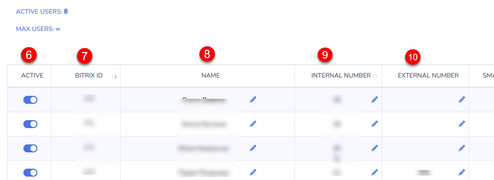

- Go to settings (1) - Go to the settings page
- Integration Info (2) - Integration information
- Show active users (3) - Filter to display active users
- Save and restart (4) - Saving the settings and restarting the integration
- Search (5) - Searching for entries in the settings table
- Active (6) - Enabling the user (employee) settings via Callbee. Activating the commercial license for this user (active users should not exceed the number of licenses). If the toggle is set to Off, the integrated service will ignore this user, even if the extension phone number is entered, and all other fields are filled in.
- Bitrix ID (7) - User (employee) ID in Bitrix 24
- Name (8) - User (employee) name in Bitrix24
- Internal Number (9) - User’s (employee’s) extension phone number
- External Number (10) - The personal phone number of the user (employee) who will make calls on a mobile device using the Bitrix24 click-to-call feature. When using the click-to-call feature on a mobile device, a call will be made in both directions - to the user (employee) and the customer of your company. The number is used to connect to the Bitrix24 application on a mobile device and make calls using the click-to-call feature.
- Smart Call (11) - Enabling smart routing (transferring a call to a designated employee) with working hours indicated. Outside of the smart routing schedule, the call will be forwarded according to the default route. This feature is most often used to play a message to a customer that he got through after hours.
- B24 Time (12) - Enabling the user’s (employee’s) work schedule for smart routing from Bitrix24
- Add to Chat (13) - Enabling the displaying of information about all calls in the Bitrix24 chat
- Auto Answer (14) - Enabling the auto answer feature on a SIP phone (hardware or software (softphone)). When making calls using the click-to-call feature via Callbee, the call is initially routed as an incoming call to a SIP phone (hardware or software), and after it is received, an outgoing call is made to a customer of your company. Enabling this feature will allow a SIP phone (hardware or software) to receive a call automatically, without the involvement of a user (employee). It can be enabled if the SIP phone (hardware or software) supports this feature (for example, Yealink SIP phones with the latest firmware)
- Multiple Registration (15) - Enabling the Multiple Registration feature allows you to use the click-to-call feature when you have a number of SIP phones (hardware or software)
Important warning!
When connecting to the integrated service for the first time, before saving all the settings, you need to log in to Bitrix24 as an admin in the next tab of your browser.
5. Further Bitrix24 Configuration
5.1 Bitrix24 Telephony Configuration
-
In the Bitrix 24 main menu, go to Telephony

-
Then select Telephony Settings (1)

- In Telephony settings, click Default outbound number (2) -> Application: Asterisk and Yeastar Callbee.io
Then click Save

You have completed the integration setup!